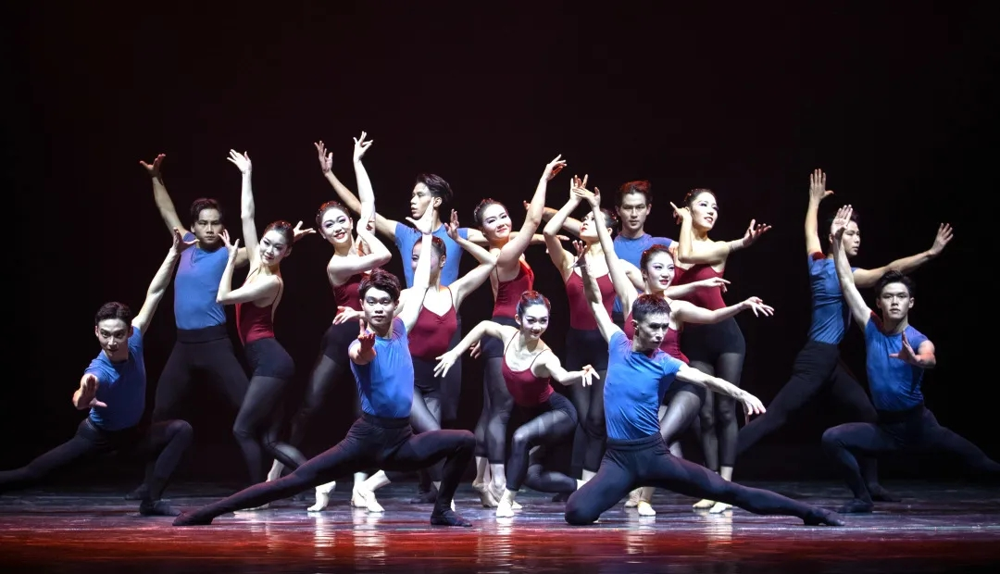
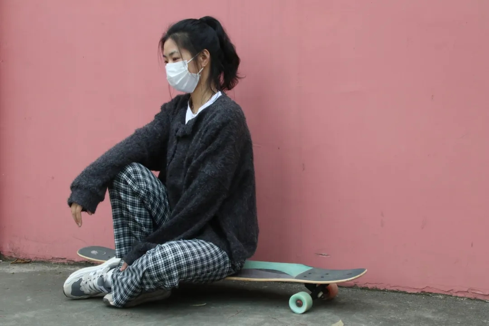
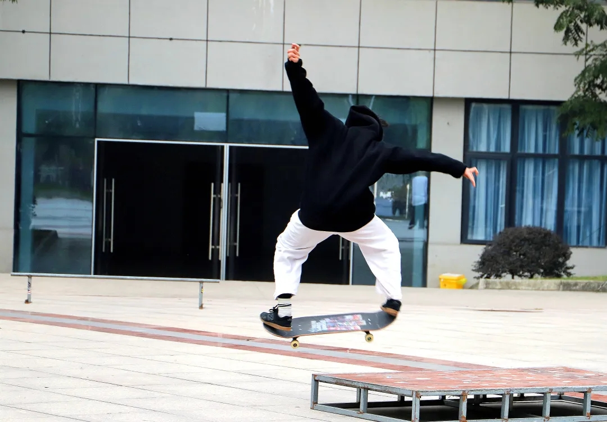

生活写照
该是激情和活力的，从 青春就应该是激情和活力

青春就青春就应该是激情和活力应该是激情和活力
生命不止，运动不息 校园运动场，跑步或打球 ，运动不息 校园运动场，跑步或打球 那奔跑、跳跃的身影 如此夺目帅气 汗水蒸发出青春的味道 无论是为了强身健体 还是磨炼意志 在运动场上 道 无论是为了强身健体 还是磨炼意志 在运动场上 挥洒汗水就是最简单的快乐
，运动不息 校园运动场，，运动不息 校园运动场，跑步或打球 那奔跑、跳跃的身影 如此夺目帅气 汗水蒸发出青春的味道 无论是为了强身健体 还是磨炼意志 在运动场上 挥洒汗水就，运动不息 校园运动场，跑步或打球 那奔跑、跳跃的身影 如此夺目帅气 汗水蒸发出青春的味道 无论是为了强身健体 还是磨炼意志 在运动场上 挥洒汗水就是最简单的快乐，运动不息 校园运动场，跑步或打球 那奔跑、跳跃的身影 如此夺目帅气 汗水蒸发出青春的味道 无论是为了强身健体 还是磨炼意志 在运动场上 挥洒汗水就是最简单的快乐是最简单的快乐夺目帅气 汗水蒸发出青春的味道 无论是为了强身健体 还是磨炼意志 在运动场上 挥洒汗水就是最简单的快乐
浪漫主义是一种情怀，它不是某一个品牌的瓷器，也不是某一种类型的服饰，它不拘泥于人像或者是静物，它是一种精神状态.字听写大赛所赋予我们每个学生的意义，不仅仅让我们更加清晰地了解自己的水平，更让我们知道我们是一个中国人，应该写好中国字，因为这不仅是我们中华文明的宝贵遗产，更是可以让我们受益终生的启明星。